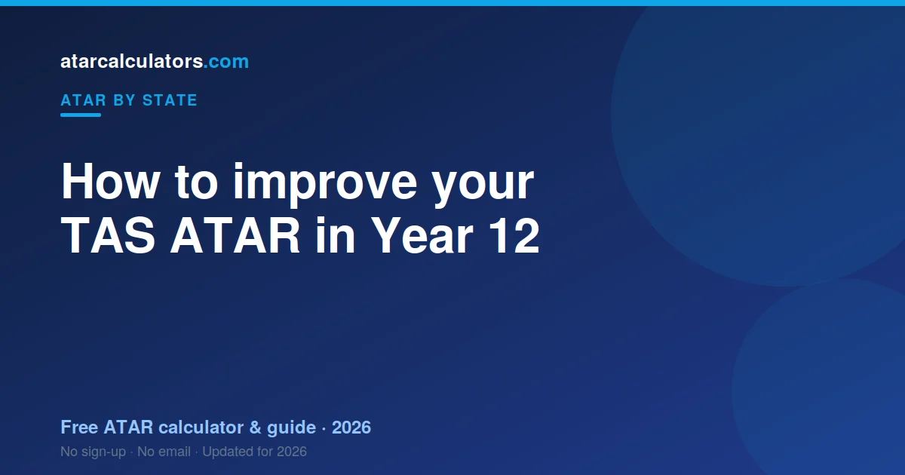

To improve your TAS ATAR, focus on your rank within each pre-tertiary subject, because ranking drives scaling. Your ATAR is built from your best five Level 3 and 4 subjects, so choose subjects you can score highly in, and make each of your best five count. Sharpen your external assessments, and remember that UTAS pathways and adjustment points can lift your entry, even though they do not change your ATAR itself.
Key takeaways
- Your ATAR is not fixed until your final assessments.
- Focus on your rank within each pre-tertiary subject — it drives scaling.
- Your ATAR uses your best five Level 3 and 4 subjects.
- Choose subjects you can score highly in, not just high-scaling ones.
- UTAS pathways and adjustment points can lift your entry, not your ATAR.
- Sharpen your external assessments and exam technique.
- A weaker sixth subject does not drag your ATAR down.

Can you still improve in Year 12?
Yes. Your Tasmanian ATAR reflects where you finish, not where you start. Your final pre-tertiary year is where your ATAR is decided, and it is often when students improve most, as content consolidates and skills sharpen.
The key is to improve where it counts. Because your ATAR is built from your best five scaled subjects, targeted effort on the right subjects moves your ATAR more than spreading effort thinly.
So treat your current estimate as a starting point. With a focused plan, there is real room to lift your ATAR before your final assessments.
Why your rank matters most
The single most important thing to understand is that scaling acts on your rank within each subject. Your position relative to the other students in your pre-tertiary subject is what determines your scaled score.
So your goal in every subject is to rank as high as you can. Scaling then adjusts the whole subject up or down, but it never changes your position within it. A strong rank always produces a stronger scaled score.
This is why beating the students around you in each subject is the most reliable way to lift your ATAR. Rank is the lever scaling pulls.
Only your best five count
Your Tasmanian ATAR comes from your best five pre-tertiary Level 3 and 4 subjects, combined into a Tertiary Entrance rank. This has a useful implication: a weaker sixth subject does not drag your ATAR down.
So you can attempt more than five pre-tertiary subjects without risk, and if one goes poorly, it simply falls outside your best five and does not count. This gives you a safety margin and room to find your strongest combination.
It also means your focus should be on making five subjects as strong as possible, rather than spreading yourself thinly across six or more. Depth in your best five beats thin effort across all.
Choosing the right subjects
Subject choice matters, but the best subjects for your ATAR are the ones you can rank highly in, which usually means pre-tertiary subjects that suit your strengths and that you are motivated to work at.
A strong rank in a subject you are good at beats a weak rank in a high-scaling subject you struggle with. So start from your strengths, then weigh scaling as a secondary factor. See best scaling subjects in Tasmania.
Make sure you are taking enough Level 3 and 4 pre-tertiary subjects to build a full ATAR, and check any prerequisites for the university courses you want.
Use scaling wisely
TCE scaling rewards strong cohorts, so the higher maths and sciences tend to scale well. But scaling only helps if you can rank well in those subjects. A high-scaling subject you sink in gains you nothing.
So use scaling as a tiebreaker, not a driver. If you can do equally well in two subjects, prefer the one that scales better. But never choose a subject purely for scaling if it would pull your rank down.
Your external assessments
Pre-tertiary subjects include external assessment, such as an exam, that contributes to your final subject score alongside your internal work. Performing well here lifts your subject result, so it is worth targeted preparation.
Prepare with past papers or exemplars under realistic conditions, learn how marks are allocated, and manage your time. These skills convert the knowledge you already have into marks when it counts most.
Protect your strong subjects
Lifting weak subjects should not come at the cost of your strong ones. Your best subjects contribute most to your rank, so letting them slip while you fix weaknesses can cancel out your gains.
Keep your strong subjects ticking over with steady revision, while you direct extra effort at the weaker ones. The aim is to raise your overall result, not simply shift effort around.
UTAS pathways and adjustment points
The University of Tasmania offers more than ATAR-based entry. Programs that recognise school recommendations, and adjustment factors for certain circumstances, can lift the rank used to consider you for a course. These do not change your ATAR itself.
So your ATAR stays the same, but your effective entry position for a specific course can be higher. UTAS also runs enabling and foundation pathways for students who do not enter directly on their ATAR. Check the options for the courses you want.
A tool like a selection rank calculator can help you see how adjustment points affect your rank for a given course, separate from your ATAR.
Lift your weakest high-value subject
Not all improvement is equal. A few extra marks in a subject that sits among your best five is worth more than the same effort in one that will not count. So identify your weakest subject that still makes your best five.
That subject is where focused effort pays off most: it counts towards your rank, and it has the most room to rise. Fixing it lifts your ATAR more efficiently than polishing a subject that is already strong.
Sharpen exam technique
Many students lose marks to technique rather than knowledge: misreading questions, poor timing, or leaving parts unanswered. Fixing this lifts your marks without learning new content, which makes it one of the quickest wins.
Practise with past papers, learn the command words, and manage your time so you attempt every question. Small technique gains across several subjects add up to a meaningful ATAR difference.
Make a simple plan
Before adding extra study, spend an hour making a plan. List your pre-tertiary subjects, your current marks, and the five most likely to make your best rank. Then rank the gaps by size and by how much each counts.
That ranking is your priority order: it tells you where the next hour of study does the most good. Revisit it every couple of weeks as your marks change, so your effort stays aimed at the subjects that move your ATAR most.
Track your progress
Re-check your estimated ATAR as your marks improve, so you can see whether your effort is working and where to focus next. A rising estimate is both a check on your plan and a motivator.
Update your marks after each round of assessment. If the number is moving, your plan is working; if not, adjust where you are putting your effort. See more ways to improve a predicted ATAR.
Model your TAS ATAR
To plan your improvement, use our TCE ATAR calculator. Enter your subject scores to see your estimated ATAR, and test how lifting specific subjects would change it.
Seeing the effect of a few extra marks in your best five often makes the plan clear. Focus your effort where it moves your rank most, and track it as you go.
Stay well while you push
Pushing to lift your ATAR does not mean running yourself into the ground. Sleep, breaks and exercise protect the focus and memory you need for your assessments. A burnt-out student underperforms, whatever their ability.
So build a routine you can sustain, with steady, focused work and real rest, and aim to arrive at your final assessments sharp rather than exhausted. Consistent effort over the year beats last-minute cramming, both for your marks and for your wellbeing.
Small gains add up
Improvement rarely comes in one dramatic leap. It comes from small gains across your best five subjects, which accumulate. A few marks here from better technique, a few there from a fixed weak topic, and the total moves your ATAR.
This is encouraging, because small gains are achievable. You do not need to transform overnight; you need steady, targeted improvements that stack up. Across five subjects, modest gains in each can lift your rank by a meaningful amount.
Common questions
Can you still improve your ATAR in Year 12?
Yes. Your Tasmanian ATAR reflects where you finish, not where you start. Your final pre-tertiary year is where your ATAR is decided, so focused effort, especially on your best five subjects, genuinely moves your ATAR.
Does subject choice affect your ATAR?
Yes, but the best subjects are the ones you can rank highly in. A strong rank in a subject that suits you beats a weak rank in a high-scaling subject you struggle with. Start from your strengths, then weigh scaling.
Do adjustment or bonus points raise your ATAR?
No, they do not change your ATAR itself. UTAS pathways and adjustment factors lift the rank used to consider you for a specific course, so your effective entry position can be higher while your ATAR stays the same.
How important is internal ranking?
Very. Scaling acts on your rank within each subject, and your internal assessment sets much of that rank. Ranking as high as you can in each of your best five subjects is the most reliable way to lift your ATAR.